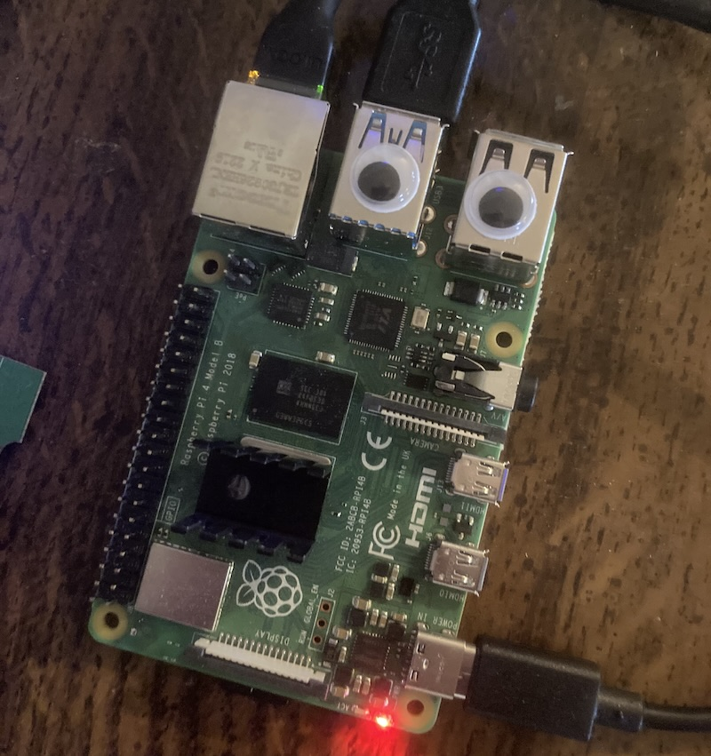
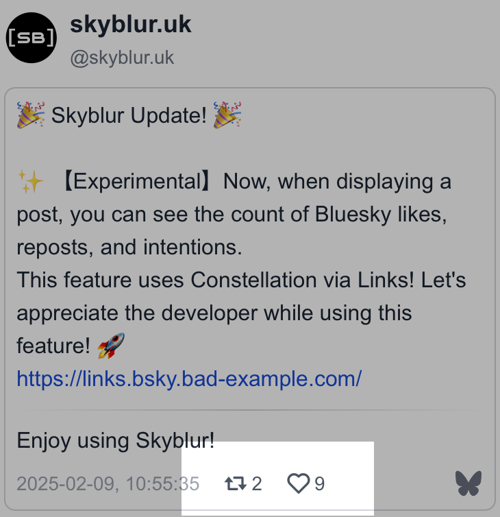
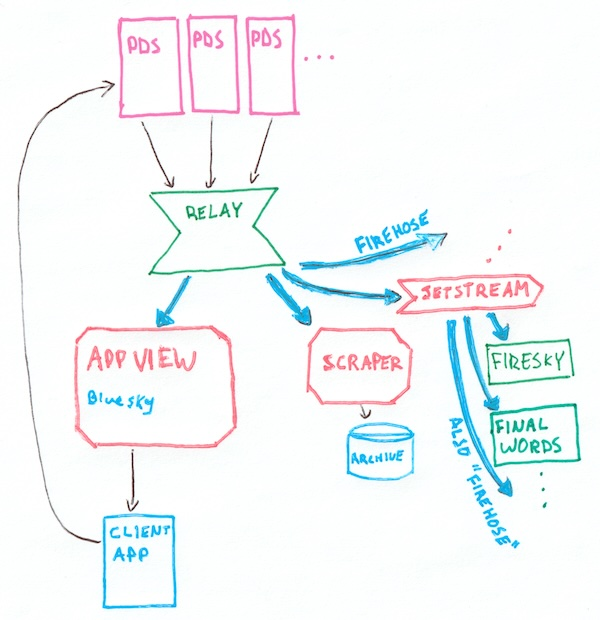
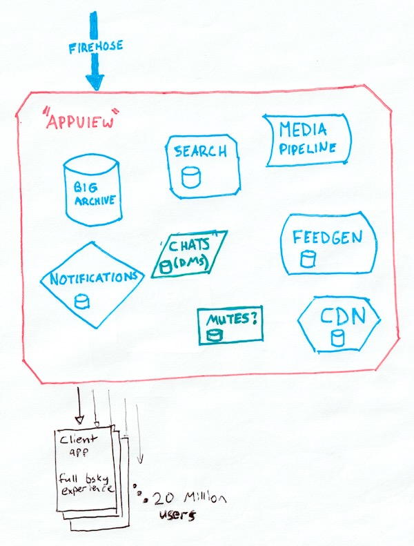

atproto and bluesky
Can atproto scale down?
2025-02-12 by phil (they/them)
status: draft in progress, please don't share yet
It's frequently stated[by who?] that some core components of the AT-Protocol architecture are expensive to host and don't scale down. So expensive that they are out of reach reach except for VC-funded commercial companies like Bluesky PBC, and expensive due to the structure of the protocol itself. Very non-decentralized.
We're going to skip past your Personal Data Server (PDS; cheap), going to put aside the Relay costs for now, and consider Bluesky's expensive AppView component.
And skipping right to the end, my answer to "can it scale down" is just: "yes!". Here's my Raspberry Pi 4b, at home, consuming a few watts and pulling around 20GB of simplified firehose events per day. It's an AppView indexing all cross-repo references (backlinks) in the AT-mosphere, often up to 1,500 created per second. It's closing in on one billion backlinks, eating up an old SATA SSD connected over a salvaged USB adapter.
- 
- 
Backlinks can hydrate information about social interactions. Skyblur.uk is using the index on this very pi to show the counts of likes, reposts, and replies to a post. The index can tell you about Bluesky quote-posts, replies, account followers and blockers; Frontpage story comments, upvotes, and so on.
Obviously this is doing less than Bluesky PBC's AppView so maybe you're not convinced. But zoom out with me: a hard thing that BlueSky's AppView implementation is doing is serving over 31 million users (read load) with best-in-class feedgen. Our self-host dream doesn't involve that.
Our self-host dream does involve handling the same 31M user write load as Bluesky's, but I think this is where the it's expensive critique gets wires crossed: Bluesky's read load is what's actually expensive. I have a billion links on a happy raspberry pi.
AT-Protocol and the Bluesky AppView
Dan Abramov's talk Web Without Walls is worth a watch if you're new to AT-Protocol.

AT-Protocol has this nice circular (unidirectional!) data flow. Everyone gets their own little personal data repository for their content that's hosted by a PDS, changes are aggregated by a Relay, broadcast to AppViews, which present that content back to you.
Since the AppView gets the full feed of all data from everyone posting in the world, it can be built as a mostly typical http app backend but with an unusual write path.
Bluesky's relay is open, so you can build your own AppView and receive all the global content just by connecting with a websocket. The global content feed is called the firehose, and jetstream is an awesome firehose adaper that emits simplified JSON.
Event log, the "shared heap"
todo
Bluesky's AppView
…I mean I don't work there, but asdlfkjasldkjflklaksdfjlkasdjf i need a break
I could probably end it here, but I'm going to use the rest of the space here to outline a decomposition of Bluesky's appview that I believe can be self-hosted at a small scale. If you're more interested in action, microcosm is my side-project to actually build it.
Small services that work together
todo
Beyond Bluesky
todo
Other existing full-network alternative appviews
todo: find the c# bsky one
Other notes
the best atproto critque i know of, and a few points of which this post tries to disprove
I share concern for the risk that Bluesky poses to decentralized social media. If Bluesky PBC fails, it's not yet clear if the AT-Protocol could survive. Obviously I hope so. ActivityPub and especially the work being done by Spritely Institute offer resilient decentralized alternatives without single-entity capture, and it's my hope that as people leave the billionaire-owned commercial platforms, the wider ecosystem of protocols can grow, not just atproto.
credible exit